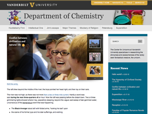

Vanderbilt WordPress Theme
Released from University Web Communications http://www.vanderbilt.edu/publicaffairs/webcomm/
The Vanderbilt WordPress Theme has a control panel that will allow you set many options. I’d suggest installing it – putting in a few pages and posts so you can have some content pre-populated – and then turn on and off options in the control pane that is accessible via the VANDERBILT BRAND menu at the bottom left of the wordpress menu. When you’ve got a design you like – start building your website!Please contact Lacy Tite (lacy.tite@vanderbilt.edu) in University Web Communications if you have any questions or suggestions for additional features!
If you would like to request customization of the theme beyond what is available through the control panel, contact our office. We’d be happy to build out a unique version of the them for your department.
A few assumptions …
This theme has been tested with WORDPRESS 2.9.2 and WORDPRESS 3.0.
- This theme is setup under the assumption that your site navigational structure is based on the PAGES and SUBPAGES of the site. Any news or blog posts or other date-based information would be within the POSTS section.
- If you are using POSTS as your websites page structure – this theme won’t look right at first. I’d encourage you to move your posts to pages, as that’s what pages are meant to be (there are quite a few plugins that will move your posts to pages with the click of a button) — :) And keep posts for date based information.
- The homepage of your site is one of your pages. You set this at: Settings > Reading > Front Page Displays *choose your homepage * You must set this in order to have the display look correct.
Below is a brief description of the current options available in the theme.
General Site Settings
- Navigation Style - top with dropdowns or right side list.
- Pages to hide in navigation – include the page ids of pages you don’t want to appear in your navigation (i.e. your homepage, or a page that is in your site – but isn’t primary information)
- Short Descriptive Blurb for right sidebar – perhaps a one or two sentence blurb about your organization (not required)
- Search Method - use wordpress search or the Vanderbilt Google Search appliance.
- Breadcrumbs – breadcrumb navigation is displayed automatically at the top of all pages and posts.
Graphic Header Options
- Use an image as the header instead of text - if you’d like to use a graphic header instead of plain Text (This also moves the searchbox down to the right column)
- URL of header image – simply create an image no wider than 950 pixels, upload it – and put the URL here.
- Header Background Color - pick a color to coordinate with your background image.
Homepage Slider Settings
- Include slider on homepage – Any post or page with a customfield ‘featureimage‘ will be put in the slider. The URL of the image to be used should be put as the customfield value.
- For the caption – it automatically pulls the title of the page or post. If you would rather use customized text, simply add a customfield “featuretext” with the text you would like to use (being mindful of the length available for display).

Right Column News Feed
- Include news feed in the right column?
- External news feed – if you’d rather use an external news feed instead of the POSTS section of your website, place the feed URL here (beginning with http:// and NOT feed://)
- If you do have a news section in your WordPress site – the theme is thumbnail enabled. Currently – the thumbnails only display on the archives page.
Social Media Links
- The social media section in the extended footer.
- Connect Section Title – what you would like the header of that section to be.
- Facebook – URL to your facebook page
- Twitter – URL to your twitter account
- Flickr – URL to your flickr account
- Flickr UserID – your flickr userid (NOT YOUR LOGIN);
- go to this website to find your flick rid: http://idgettr.com/
- YouTube – URL to your youtube account
- Google Calendar - placeholder for now, functionality not enabled.
Footer
- Footer Link List Heading – currently YOUR VANDERBILT
- Link List Column One – formatted as unordered list; input as many li’s with links as you would like in the left column
- Link List Column Two – formatted as unordered list; input as many li’s with links as you would like in the right column
- Footer copyright text - this will display next to the Vanderbilt University copyright notice.
- Google Analytics Code – put your google analytics code here – it will be placed right above the closing body tag.
Shortcodes available
- [showchildren] - placing this shortcode on a page will automatically list all of the subpages of the current page.
- [field name=customfieldname] - this short code allows you to post code that won't be altered. Useful for iframes, inline javascripts, etc.
- You create a customfield -- name it googlecal or vimeo or sitemason (whatever you want).
- Paste the html/php/js code you are wanting to use in as the value.
- Click "add custom field"
- Go back up to the post - where you want the code to be - and put the shortcode in: [field name=googlecal] or [field name=vimeo].
- [showposts category=58] - showposts allows you to provide a listing of posts on a post or a page; you can display posts from a specific category or tag - and decide how many posts you want to display - and in what order they should display (default displays by date, in ascending order). (examples below)
- [showposts tag=58]
- [showposts category=58 num=8]
- [showposts category=58 order=ASC orderby=date]
Other built-in features:
- Breadcrumbs - breadcrumb navigation will automatically appear on all pages other than your homepage.
- Sharing - social media sharing icons are added at the bottom of each page or post.